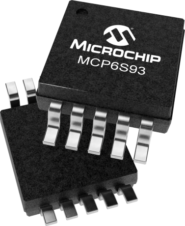
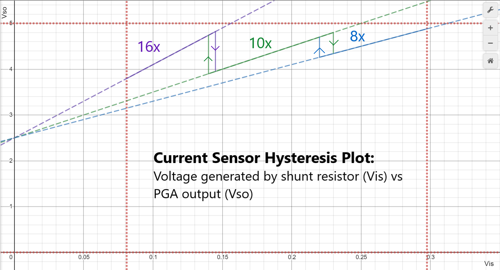
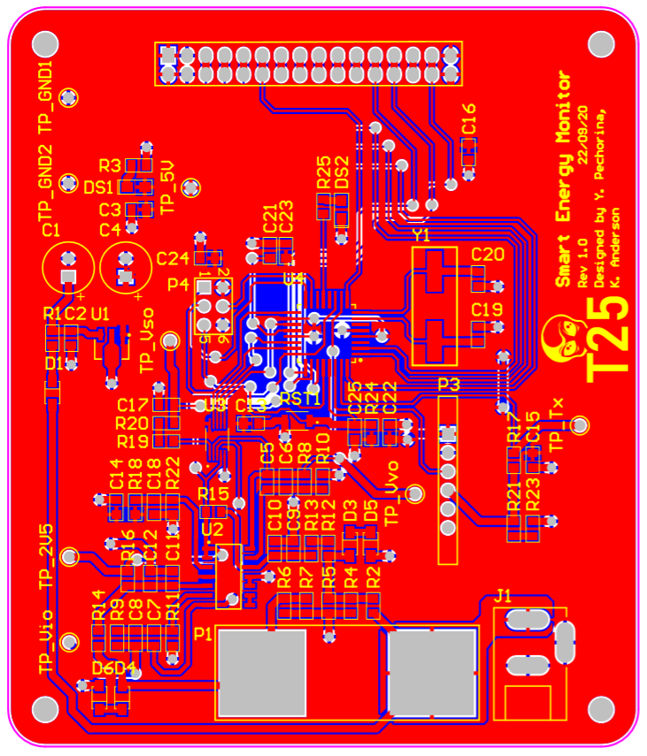
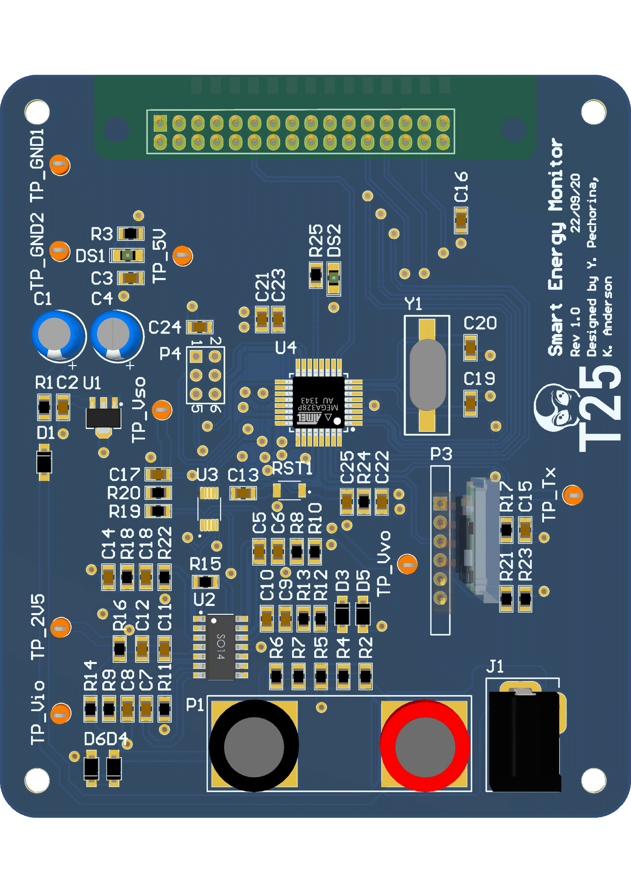

class: title-slide count: false .logo-title[] # Smart Energy Monitor ### Team 25 .TitleAuthor[Keith Anderson, Russell Eskildsen, Yulia Pechorina, and Nishan Shrestha] --- layout: true name: template_slide .logo-slide[] .footer[Team 25: Keith Anderson, Russell Eskildsen, Yulia Pechorina, and Nishan Shrestha] --- name: S1 # Project Brief Design a smart energy monitor with bluetooth connectivity # Design Goals - Maximise learning - Reflect industry standards - Design a compact PCB up to 100mm x 100mm - Maximise accuracy --- name: S2 # Key Hardware Design Features - Programmable Gain Amplifier - Achieves increased dynamic range, maximising accuracy - Uses SPI serial communication protocol, maximising learning - SMT PCB Design - Allows for a much more compact design - Industry standard PCB type - Maximises accuracy by decreasing signal trace lengths - Is more challenging to design for than through-hole, maximising learning - Built-in ATmega328PB microcontroller - Allows for a much more compact design - Industry standard method for implementing a microcontroller - Maximises accuracy by decreasing signal trace lengths - Maximises accuracy by giving potential for decreased power draw - Maximises learning by adding complexity to PCB design --- name: S2.5 # Project Management The following software is being used to help effectively manage the project - Git - Version control - Slack - Team communications - Trello - Kanban-boarding --- name: S3 # Programmable Gain Amplifier Microchip MCP6S93<br /> Chosen to improve accuracy of small signals and improve dynamic range especially for the low current signals. .right-column[ .right[] <span style=" font-size: 0.8rem; transform: translateX(-19px); transform: translateY(4rem) !important; display: flex; ">https://www.microchip.com/wwwproducts/en/MCP6S93</span> ] .left-column[ - Rail-to-rail operation - 2 channels - SPI programming - Selectable gains of 1, 2, 4, 5, <b>8, 10, 16</b> and 32. .zoom350[ .center[]] ] --- name: S4 # SMT Design - Allows for a more compact design - Cheaper and faster to produce - Closer to what is used in industry - Will give experience with reflow techniques .zoom175[ .center[]] .peekaboo[ .center[] ] --- name: S5 # Built-in ATmega328PB Microcontroller .left-column[ - Allows for the shortest possible signal traces, reducing the potential for picking up noise - Allows for a much more compact design with no plug-in development board - Clocked at 16MHz, regulated by external crystal - Option to run at a lower frequency to conserve power, which is not possible with a development board - 5V Vcc ARef with external capacitor - Chosen as the PGA operates off of the 0V and Vcc rails. - ISP programming from header - User LED provided for testing/debugging - External reset tactile pushbutton ] .right-column[ ] --- name: S6 # Project Management .left-column[ - Git used for version control of project - Major design features implemented by branching and merging - Easily review each other's work - Slack used for team communication - Convenient zoom integration for team meetings and reviews with staff - Trello used for kanban-boarding - Track and assign tasks - Resolve issues - Create meeting agendas and take minutes ] .right-column[ <img src="img/intro/git.gif" width="350px"> ] --- class: title-slide layout: false count: false .logo-title[] # Acknowledgements #### Special thanks to Duleepa and all 209 staff #### for their valuable help, advice and feedback. --- class: title-slide layout: false count: false .logo-title[] # Questions? ### Thank you